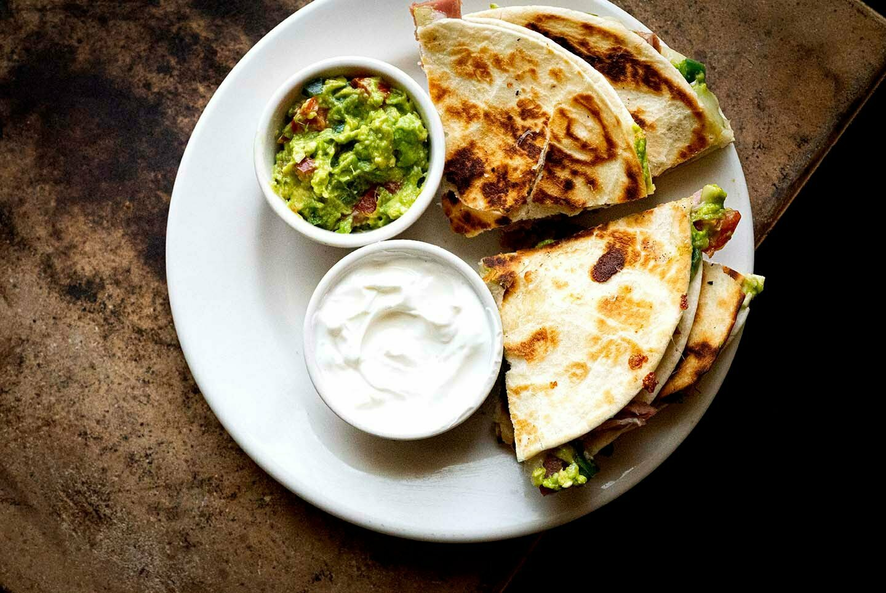

Sincronizada

Sincronizada is one of many Mexican dishes that have many varieties that consist of ham, cheese, beens, lettuce, tomatos, ect.
Some Sincronizadas can be made with beef, chicken, pork or shredded beef.
Ingredients
- 2 avocados, peel and pitted
- 2 jalapeños, seeded and diced
- ½ cup grape tomatoes, diced
- 2 cloves garlic, minced
- 2 tablespoons lime juice
- ½ teaspoon kosher salt
- 2 tablespoons unsalted butter
- 8 flour tortillas
- 8 ounces sliced ham
- 8 ounces shredded Monterey Jack or Mozzarella
- Sour cream, for serving
Steps
- First, make the guacamole by mashing the avocado in a bowl with jalapeños, tomatoes, garlic, lime juice, and salt. Taste and adjust the salt if needed.
- For the sincronizadas, in a skillet heated on medium-low, melt ½ tablespoon of the butter.
- Add a tortilla and layer over the entire surface in this order:
¼ cup of the cheese, ¼ of the sliced ham, 2 tablespoons of guacamole, and another ¼ cup of the cheese. Top with another tortilla.
- After the cheese has melted and the 2 tortillas are beginning to stick, flip the sincronizada and cook for a couple more minutes or until the bottom tortilla is toasted.
Remove the sincronizada and cover with foil to keep warm. Repeat the process for the remaining tortillas and filling.
- Cut into wedges and serve warm with remaining guacamole and sour cream.